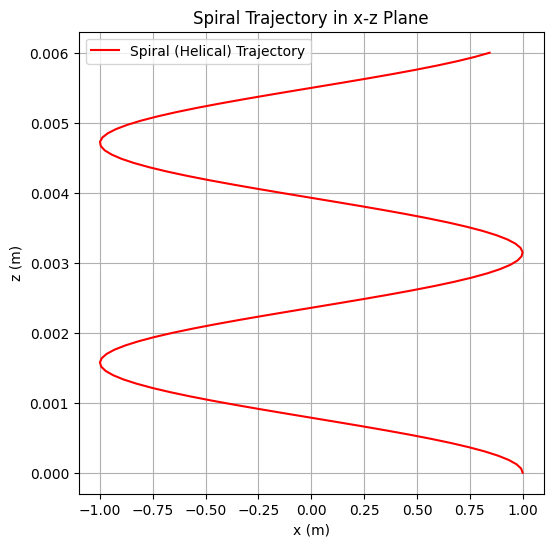
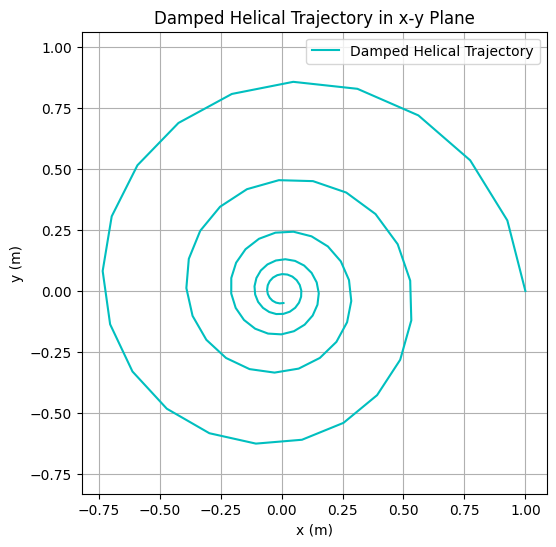
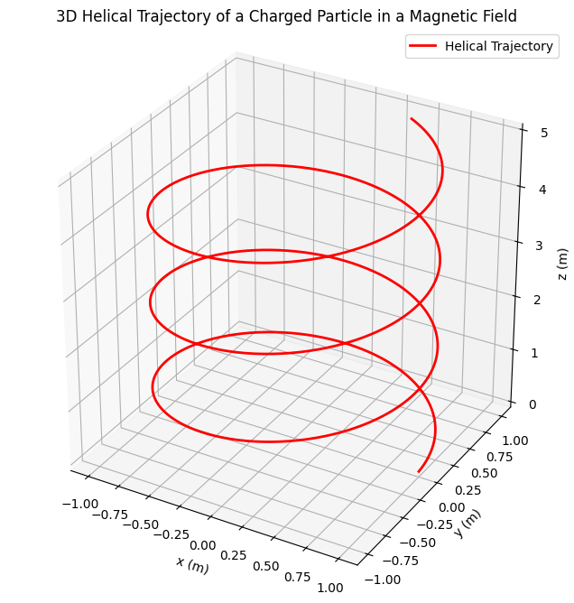
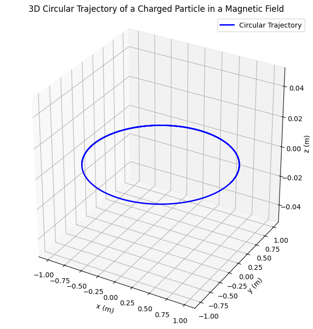
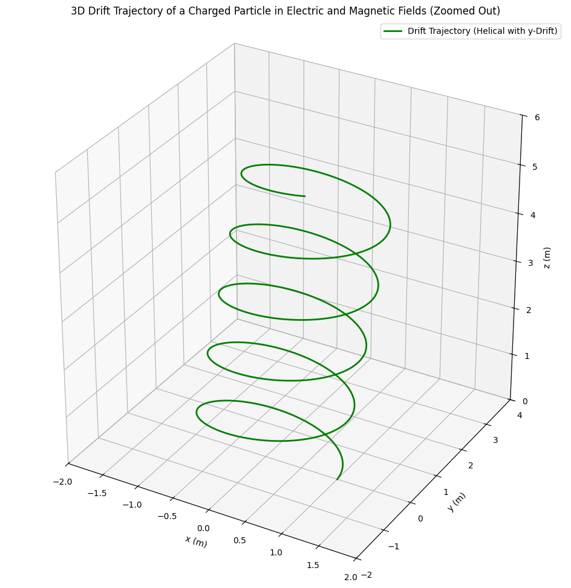
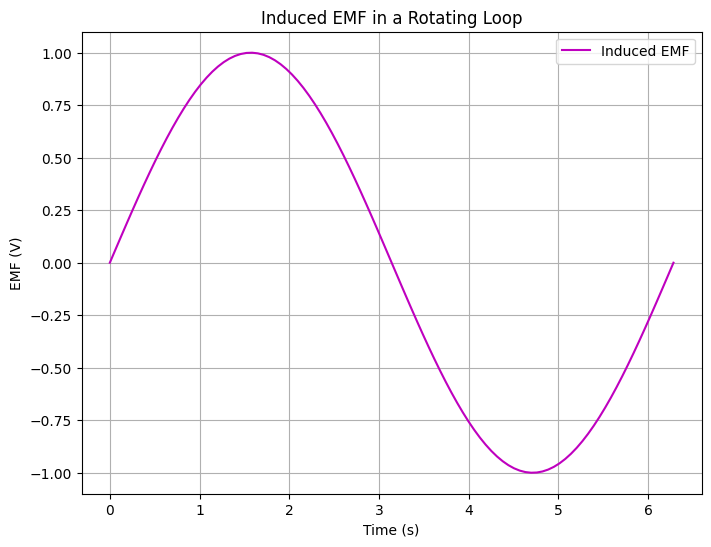

Problem 1
1. Electric Field and the Principle of Superposition
The electric field \(\mathbf{E}\) at a point in space is defined as the force \(\mathbf{F}\) per unit charge \(q\) experienced by a positive test charge placed at that point: $$ \mathbf{E} = \frac{\mathbf{F}}{q} $$ The electric field due to a point charge \(Q\) at a distance \(r\) is given by Coulomb’s law: $$ \mathbf{E} = \frac{k Q}{r^2} \hat{\mathbf{r}} $$ where \(k\) is Coulomb’s constant (\(k \approx 8.99 \times 10^9 , \text{N·m}^2/\text{C}^2\)), and \(\hat{\mathbf{r}}\) is the unit vector pointing from the charge to the observation point.
Principle of Superposition
The principle of superposition states that the total electric field at a point due to multiple charges is the vector sum of the individual electric fields produced by each charge. Mathematically, for \(n\) point charges \(q_i\) at positions \(\mathbf{r}i\), the total electric field at point \(\mathbf{r}\) is: $$ \mathbf{E}{\text{total}}(\mathbf{r}) = \sum_{i=1}^n \mathbf{E}i(\mathbf{r}) = \sum{i=1}^n \frac{k q_i}{|\mathbf{r} - \mathbf{r}i|^2} \hat{\mathbf{r}}{i} $$ where \(\hat{\mathbf{r}}_{i}\) is the unit vector from the \(i\)-th charge to the point \(\mathbf{r}\).
Example: Two Point Charges
Consider two point charges: \(q_1 = +2 , \mu\text{C}\) at \((0, 0)\) and \(q_2 = -3 , \mu\text{C}\) at \((d, 0)\), with \(d = 1 , \text{m}\). Calculate the electric field at point \(P = (0.5, 0)\).
Electric field due to \(q_1\) at \(P\): Distance \(r_1 = 0.5 , \text{m}\), so: $$ E_1 = \frac{k q_1}{r_1^2} = \frac{(8.99 \times 10^9)(2 \times 10^{-6})}{(0.5)^2} = 7.192 \times 10^4 , \text{N/C} $$ Directed along the positive \(x\)-axis: \(\mathbf{E}_1 = (7.192 \times 10^4, 0)\).
Electric field due to \(q_2\) at \(P\): Distance \(r_2 = 0.5 , \text{m}\), so: $$ E_2 = \frac{k |q_2|}{r_2^2} = \frac{(8.99 \times 10^9)(3 \times 10^{-6})}{(0.5)^2} = 1.079 \times 10^5 , \text{N/C} $$ Since \(q_2\) is negative, the field points toward \(q_2\) (negative \(x\)-direction): \(\mathbf{E}_2 = (-1.079 \times 10^5, 0)\).
Total electric field: $$ \mathbf{E}_{\text{total}} = \mathbf{E}_1 + \mathbf{E}_2 = (7.192 \times 10^4 - 1.079 \times 10^5, 0) = (-3.598 \times 10^4, 0) , \text{N/C} $$ The net field points in the negative \(x\)-direction with magnitude \(3.598 \times 10^4 , \text{N/C}\).
Symbols and Units
\(\mathbf{E}\): Electric field, units: \(\text{N/C}\) (newtons per coulomb)
\(\mathbf{F}\): Force, units: \(\text{N}\) (newtons)
\(q\), \(q_i\), \(Q\): Electric charge, units: \(\text{C}\) (coulombs)
\(k\): Coulomb’s constant, units: \(\text{N·m}^2/\text{C}^2\)
\(r\), \(r_1\), \(r_2\), \(|\mathbf{r} - \mathbf{r}_i|\): Distance, units: \(\text{m}\) (meters)
\(\hat{\mathbf{r}}\), \(\hat{\mathbf{r}}_{i}\): Unit vector, dimensionless
\(\mathbf{r}\), \(\mathbf{r}_i\): Position vector, units: \(\text{m}\) (meters)
2. Electric Potential and Electric Field Relationship
The electric potential \(V\) at a point is the work done per unit charge to bring a positive test charge from infinity to that point: $$ V = -\int_{\infty}^{\mathbf{r}} \mathbf{E} \cdot d\mathbf{l} $$ For a point charge \(q\) at distance \(r\), the potential is: $$ V = \frac{k q}{r} $$
Electric Field as the Gradient of Potential
The electric field is the negative gradient of the electric potential: $$ \mathbf{E} = -\nabla V $$ In Cartesian coordinates, this is: $$ \mathbf{E} = -\left( \frac{\partial V}{\partial x} \hat{\mathbf{i}} + \frac{\partial V}{\partial y} \hat{\mathbf{j}} + \frac{\partial V}{\partial z} \hat{\mathbf{k}} \right) $$
Derivation
Consider the potential due to a point charge \(q\) at the origin, \(V = \frac{k q}{r}\), where \(r = \sqrt{x^2 + y^2 + z^2}\). The gradient is: $$ \nabla V = \frac{\partial V}{\partial x} \hat{\mathbf{i}} + \frac{\partial V}{\partial y} \hat{\mathbf{j}} + \frac{\partial V}{\partial z} \hat{\mathbf{k}} $$ Compute the partial derivative: $$ \frac{\partial V}{\partial x} = \frac{\partial}{\partial x} \left( \frac{k q}{(x^2 + y^2 + z^2)^{1/2}} \right) = -\frac{k q x}{(x^2 + y^2 + z^2)^{3/2}} $$ Similarly for \(y\) and \(z\). Thus: $$ \nabla V = -\frac{k q \mathbf{r}}{r^3} $$ So: $$ \mathbf{E} = -\nabla V = \frac{k q \mathbf{r}}{r^3} = \frac{k q}{r^2} \hat{\mathbf{r}} $$ This matches the expression for the electric field of a point charge.
Physical Implications
The negative sign indicates that the electric field points in the direction of decreasing potential, reflecting the force on a positive charge.
Equipotential surfaces are perpendicular to electric field lines.
This relationship simplifies calculations in systems with high symmetry, as scalar potentials are often easier to compute than vector fields.
Symbols and Units
\(V\): Electric potential, units: \(\text{V}\) (volts)
\(\mathbf{E}\): Electric field, units: \(\text{N/C}\) or \(\text{V/m}\) (volts per meter)
\(d\mathbf{l}\): Differential displacement, units: \(\text{m}\) (meters)
\(q\): Electric charge, units: \(\text{C}\) (coulombs)
\(k\): Coulomb’s constant, units: \(\text{N·m}^2/\text{C}^2\)
\(r\): Distance, units: \(\text{m}\) (meters)
\(\mathbf{r}\): Position vector, units: \(\text{m}\) (meters)
\(x\), \(y\), \(z\): Cartesian coordinates, units: \(\text{m}\) (meters)
\(\hat{\mathbf{i}}\), \(\hat{\mathbf{j}}\), \(\hat{\mathbf{k}}\): Unit vectors, dimensionless
3. Lorentz Force
The Lorentz force acts on a charged particle with charge \(q\) moving with velocity \(\mathbf{v}\) in electric and magnetic fields \(\mathbf{E}\) and \(\mathbf{B}\): $$ \mathbf{F} = q \mathbf{E} + q \mathbf{v} \times \mathbf{B} $$
The electric force \(q \mathbf{E}\) is independent of the particle’s velocity.
The magnetic force \(q \mathbf{v} \times \mathbf{B}\) is perpendicular to both \(\mathbf{v}\) and \(\mathbf{B}\) and vanishes if \(\mathbf{v} = 0\) or \(\mathbf{v} \parallel \mathbf{B}\).
Applications
Cyclotrons: A charged particle moves in a circular path in a uniform magnetic field due to the magnetic component of the Lorentz force. The radius of the path is: $$ r = \frac{m v}{|q| B} $$ Cyclotrons use this to accelerate particles for research.
Mass Spectrometers: The Lorentz force separates ions by mass-to-charge ratio. Ions follow curved paths in a magnetic field, with the radius depending on \(m/q\), allowing identification of particles.
Trajectory Visualizations
Below are Python plots depicting three trajectories of a charged particle with charge \(q = 1 , \text{C}\) and mass \(m = 0.001 , \text{kg}\) in a uniform magnetic field \(\mathbf{B} = (0, 0, 1) , \text{T}\), with no electric field (\(\mathbf{E} = 0\)). The equations of motion are derived from: $$ m \frac{d\mathbf{v}}{dt} = q \mathbf{v} \times \mathbf{B} $$ The cyclotron frequency is: $$ \omega = \frac{|q| B}{m} = \frac{1 \cdot 1}{0.001} = 1000 , \text{rad/s} $$ The radius is: $$ r = \frac{m v}{|q| B} = \frac{0.001 v}{1 \cdot 1} = 0.001 v $$ To achieve a radius \(r \approx 1 , \text{m}\), we set the initial velocity magnitude appropriately (e.g., \(v = 1000 , \text{m/s}\)).
Spiral Trajectory
For initial velocity \(\mathbf{v}_0 = (1000, 0, 0)\), the radius is \(r = 0.001 \cdot 1000 = 1 , \text{m}\), and the trajectory is a circle in the \(x\)-\(y\) plane: $$ x(t) = r \cos(\omega t), \quad y(t) = r \sin(\omega t), \quad z(t) = 0 $$

Interesting Trajectory (Damped Helix)
With a damping force (e.g., resistive medium), the trajectory is:
where \(\gamma = 100 , \text{s}^{-1}\) (scaled for visibility with high \(\omega\)), \(r = 1 , \text{m}\), \(v_z = 0.5 , \text{m/s}\). The plot shows the \(x\)-\(y\) projection.




Symbols and Units
\(\mathbf{F}\): Lorentz force, units: \(\text{N}\) (newtons)
\(q\): Electric charge, units: \(\text{C}\) (coulombs)
\(\mathbf{E}\): Electric field, units: \(\text{N/C}\)
\(\mathbf{v}\): Velocity, units: \(\text{m/s}\) (meters per second)
\(\mathbf{B}\): Magnetic field, units: \(\text{T}\) (tesla)
\(m\): Mass, units: \(\text{kg}\) (kilograms)
\(r\): Radius of circular path, units: \(\text{m}\) (meters)
4. Electric Currents and Magnetic Fields
Magnetic Field of a Current-Carrying Wire
The magnetic field produced by an infinite straight wire carrying current \(I\) at a distance \(r\) is derived using the Biot-Savart Law: $$ d\mathbf{B} = \frac{\mu_0}{4\pi} \frac{I d\mathbf{l} \times \hat{\mathbf{r}}}{r^2} $$ where \(\mu_0 = 4\pi \times 10^{-7} , \text{T·m/A}\) is the permeability of free space. For an infinite wire along the \(z\)-axis, the magnetic field at distance \(r\) is: $$ B = \frac{\mu_0 I}{2\pi r} $$ directed azimuthally (via the right-hand rule).
Forces Between Current-Carrying Wires
For two parallel wires with currents \(I_1\) and \(I_2\) separated by distance \(d\):
Same direction: The magnetic field from one wire induces an attractive force on the other. The force per unit length is: $$ \frac{F}{L} = \frac{\mu_0 I_1 I_2}{2\pi d} $$
Opposite directions: The force is repulsive with the same magnitude.
Right-Hand Rule
The right-hand rule determines the direction of the magnetic field or force:
For a current-carrying wire, point the thumb in the direction of the current; the fingers curl in the direction of the magnetic field.
For the magnetic force, point fingers in the direction of \(\mathbf{v}\), palm toward \(\mathbf{B}\), and the thumb points in the direction of \(\mathbf{v} \times \mathbf{B}\).
Lenz’s Law
Lenz’s Law states that the induced current in a loop opposes the change in magnetic flux through it. This ensures conservation of energy, as the induced current creates a magnetic field opposing the external field’s change.
Symbols and Units
\(\mathbf{B}\), \(d\mathbf{B}\): Magnetic field, units: \(\text{T}\) (tesla)
\(\mu_0\): Permeability of free space, units: \(\text{T·m/A}\) (tesla meter per ampere)
\(I\), \(I_1\), \(I_2\): Electric current, units: \(\text{A}\) (amperes)
\(d\mathbf{l}\): Differential length element, units: \(\text{m}\) (meters)
\(\hat{\mathbf{r}}\): Unit vector, dimensionless
\(r\), \(d\): Distance, units: \(\text{m}\) (meters)
\(F\): Force, units: \(\text{N}\) (newtons)
\(L\): Length, units: \(\text{m}\) (meters)
5. Electromagnetic Induction
Faraday’s Law
Faraday’s Law states that the electromotive force (EMF) induced in a loop is: $$ \mathcal{E} = -\frac{d\Phi_B}{dt} $$ where \(\Phi_B = \int \mathbf{B} \cdot d\mathbf{A}\) is the magnetic flux. The negative sign reflects Lenz’s Law.
Derivation
Consider a loop in a changing magnetic field \(\mathbf{B}\). The flux is: $$ \Phi_B = B A \cos\theta $$ If \(B\), \(A\), or \(\theta\) changes, the EMF is: $$ \mathcal{E} = -\frac{d}{dt} (B A \cos\theta) $$
Visualization of Induced EMF
The plot below shows the induced EMF \(\mathcal{E} = B A \omega \sin(\omega t)\) for a loop rotating in a magnetic field with \(B = 1 , \text{T}\), \(A = 1 , \text{m}^2\), \(\omega = 1 , \text{rad/s}\).

Applications
Electric Generators: Rotating coils in a magnetic field induce EMF, converting mechanical energy to electrical energy.
Transformers: Alternating current in a primary coil induces a changing magnetic flux, which induces EMF in a secondary coil, allowing voltage transformation.
Symbols and Units:
\(\mathcal{E}\): Electromotive force (EMF), units: \(\text{V}\) (volts)
\(\Phi_B\): Magnetic flux, units: \(\text{Wb}\) (webers)
\(\mathbf{B}\): Magnetic field, units: \(\text{T}\) (tesla)
\(d\mathbf{A}\): Differential area element, units: \(\text{m}^2\) (square meters)
\(A\): Area, units: \(\text{m}^2\) (square meters)
\(\theta\): Angle between \(\mathbf{B}\) and the normal to the loop, units: radians
\(t\): Time, units: \(\text{s}\) (seconds)
6. Maxwell’s Equations
Maxwell’s equations unify electricity and magnetism:
Gauss’s Law for Electricity: $$ \nabla \cdot \mathbf{E} = \frac{\rho}{\epsilon_0} $$ Relates electric field divergence to charge density.
Gauss’s Law for Magnetism: $$ \nabla \cdot \mathbf{B} = 0 $$ Indicates no magnetic monopoles.
Faraday’s Law: $$ \nabla \times \mathbf{E} = -\frac{\partial \mathbf{B}}{\partial t} $$ Describes how changing magnetic fields induce electric fields.
Ampère’s Law with Maxwell’s Correction: $$ \nabla \times \mathbf{B} = \mu_0 \mathbf{J} + \mu_0 \epsilon_0 \frac{\partial \mathbf{E}}{\partial t} $$ Relates magnetic fields to currents and changing electric fields.
Significance
Maxwell’s equations predict electromagnetic waves, where oscillating \(\mathbf{E}\) and \(\mathbf{B}\) fields propagate at the speed of light \(c = \frac{1}{\sqrt{\mu_0 \epsilon_0}}\).
They unify electricity and magnetism into a single electromagnetic theory, forming the foundation of classical electromagnetism.
Symbols and Units:
\(\mathbf{E}\): Electric field, units: \(\text{N/C}\) or \(\text{V/m}\)
\(\mathbf{B}\): Magnetic field, units: \(\text{T}\) (tesla)
\(\rho\): Charge density, units: \(\text{C/m}^3\) (coulombs per cubic meter)
\(\epsilon_0\): Permittivity of free space, units: \(\text{C}^2/\text{N·m}^2\) or \(\text{F/m}\) (farads per meter)
\(\mu_0\): Permeability of free space, units: \(\text{T·m/A}\)
\(\mathbf{J}\): Current density, units: \(\text{A/m}^2\) (amperes per square meter)
\(t\): Time, units: \(\text{s}\) (seconds)
\(c\): Speed of light, units: \(\text{m/s}\) (meters per second)